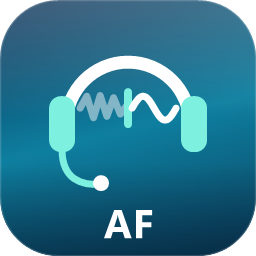

01
تنقية ذكية مع RNNoise
يقلل ضجيج الخلفية غير المرغوب فيه، علشان صوتك يفضل واضحًا أثناء المكالمات.

AF NOISEإلغاء ضوضاء الميكروفون ومعالجة صوت فورية على جهازك. صوت أنقى لمكالماتك، من غير ما صوتك يغادر جهازك.
أدوات عملية تخلي صوت الميكروفون أنقى وتديك تحكمًا كاملًا في مسار الصوت.
يقلل ضجيج الخلفية غير المرغوب فيه، علشان صوتك يفضل واضحًا أثناء المكالمات.
وجّه الصوت المنقّى إلى VB-CABLE ليكون ميكروفونك في Zoom وTeams وDiscord.
المعالجة محلية بالكامل. لا يتم رفع صوت الميكروفون إلى أي خادم.
اختَر الأجهزة واضبط مستوى الصوت وفلتر الطنين وراقب مستويات الإشارة.
ثبّت VB-CABLE، ثم اختَر الميكروفون والمخرج المناسبين. كده صوتك المعالج جاهز لمكالمتك التالية.
احصل على التطبيق ↙نزّل وثبّت VB-Audio Virtual Cable. التطبيق يحتاجه لتوجيه الصوت إلى برامج المكالمات.
تحميل VB-CABLE من الموقع الرسمي↗حدّد ميكروفونك الحقيقي، ثم اختر CABLE Input كمخرج للصوت المعالج.
شغّل المعالجة، ثم اختر CABLE Output كميكروفون داخل برنامج المكالمة.
بدأت الحكاية من احتياج حقيقي في عملي بمجال ضمان الجودة، وتحولت خطوة بخطوة إلى أداة يستخدمها الفريق يوميًا.
أثناء عملي في ضمان الجودة، كانت ضوضاء الـ Floor — من أحاديث الموظفين إلى المراوح — تؤثر على وضوح المكالمات ودقة تقييمها.
جرّبت البحث عن أدوات مثل NVIDIA Broadcast وKrisp، لكن احتجت إلى حل أبسط، خفيف، ومتاح للجميع من دون اشتراك أو متطلبات عتاد قوية.
طوّرت AF Noise Cancellation لويندوز: تنقية فورية بـ RNNoise على المعالج العادي، ومعالجة محلية تحافظ على خصوصية الصوت، وتحكم بسيط بمستوى الصوت وفلتر اختياري للطنين.
يعمل التطبيق مع Zoom وMicrosoft Teams وDiscord عبر VB-CABLE، وانتقل من التطوير والتجربة إلى الاستخدام الفعلي على أكثر من 100 جهاز داخل الشركة. وما زالت هناك أفكار وتطويرات قادمة بإذن الله.
AF Noise Cancellation · تطبيق Windows لسطح المكتب · تطوير Abdellatif Faisal
حمّل التطبيق لويندوز وابدأ في تحسين صوت مكالماتك.
حمّل لنظام Windows↓Windows 10 / 11 · 64-bit · الإصدار 1.0.0بعد نشر التطبيق كـ GitHub Release، زر التنزيل يحمّل أحدث نسخة مباشرة.